Imagination signal
Purple Cyber Dragon
A circuit-winged traveler for brave ideas, strange routes, and identities still becoming visible.
3.6s / electric flight
AO_ALIVE / 001 · Identity signal: present
A positive creative universe for reading, manners, social skills, identity lessons, and social good.
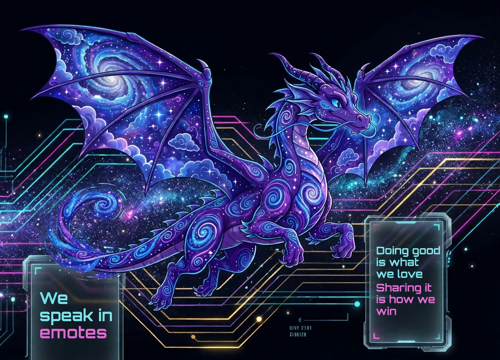
AO universe vision
AO is a town in space made of worlds. Each destination carries its own visual rhythm while remaining part of one connected Anom Originals constellation.
Founder lore / The first free signal
Oly is the founder’s reminder that imagination should not begin behind a gate. “All come free” is an invitation into the story: come curious, come as you are, and bring the feeling that wants a place to land. The worlds, creatures, emotes, and experiments grow from that promise — creative access first, care as the guide, and no one asked to become less themselves to belong. Oly Oly is a call-in, not a call-out: when you share something good, you call everyone in.
— Eliza Wood · Anom Originals
Anoms Corner / Guided reflection
A quiet place to practice being human.
This is a short, pre-authored reflection about what empathy can look like when connection feels uncertain. AO connects online identity with real-life identity through emotes, learning, and communication that helps us do good. Nothing is saved, scored, or sent anywhere.
A small moment: someone in your creative circle goes quiet after their idea changes.
There is no perfect answer. Choose the kind of support you would want to offer first.
Reflection received. Empathy does not require certainty. It begins by leaving room for another person’s reality.
Static by design. This guided sample runs only in your browser and does not save an answer, create an account, or contact an AI service.
AO Universe · 17 world registry
Every world is a social destination with its own mood, characters, and way of connecting. Tap a node to open its signal.
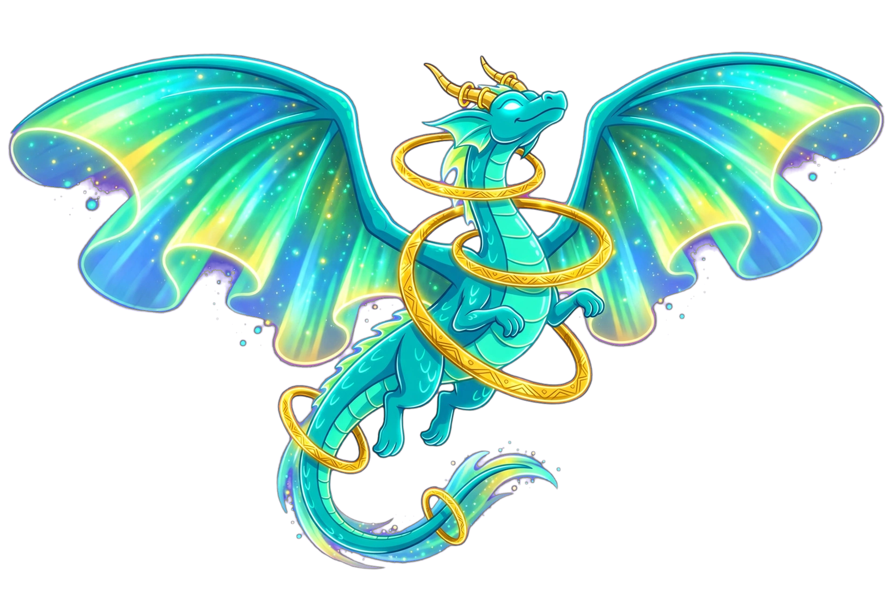
Living identity home
The living home for mounts, the AC vault, guardian gates, color studies, and the beings that carry your identity through AO.
Live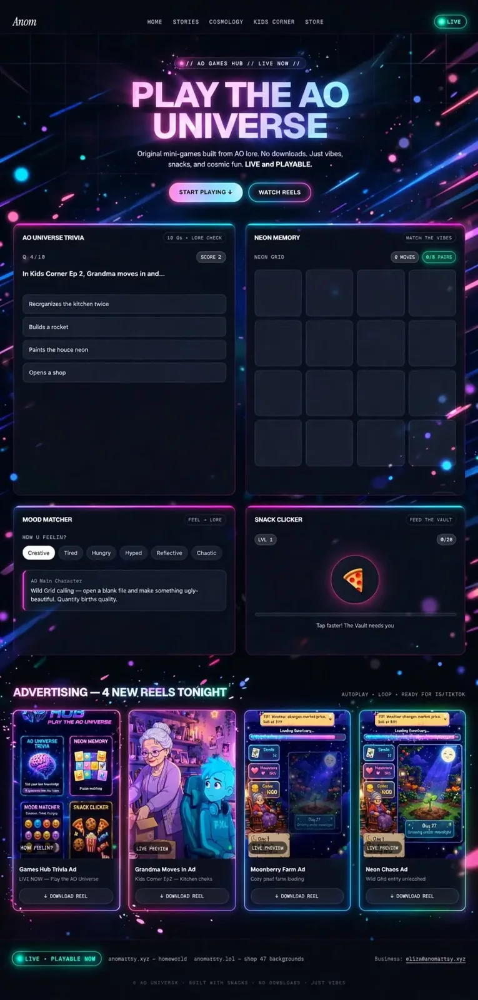
Infrastructure
The public city hub connecting lounges, purposeful games, missions, field notes, and local experience controls.
Build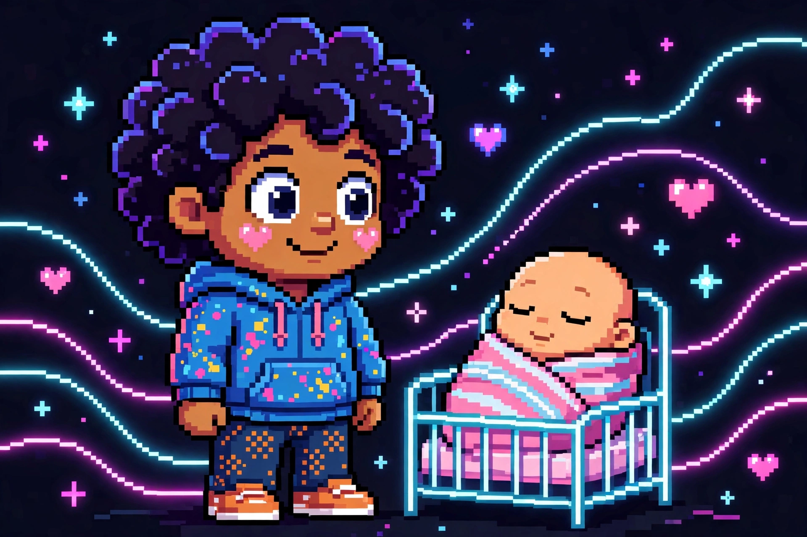
Guardians of feeling
Pixel the big sibling and baby Dot, sharing a room and a mission — and a special sound, “click, click,” just theirs.
Live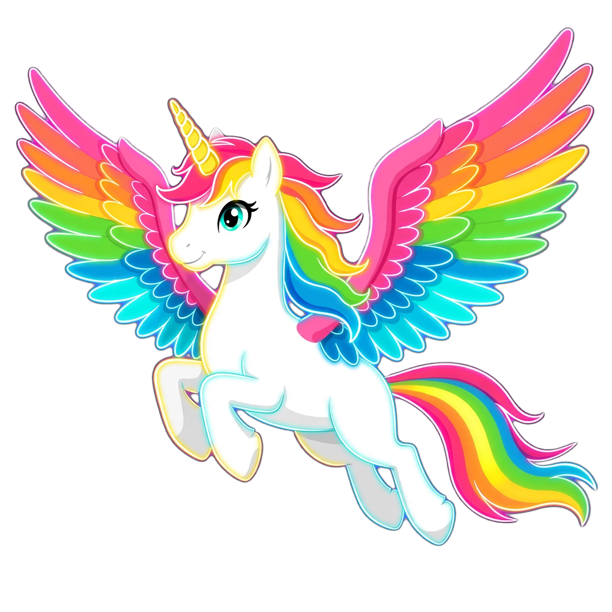
Publishing study
A reserved editorial label for presenting art studies and product narratives. This website provides no storefront or transaction flow.
Live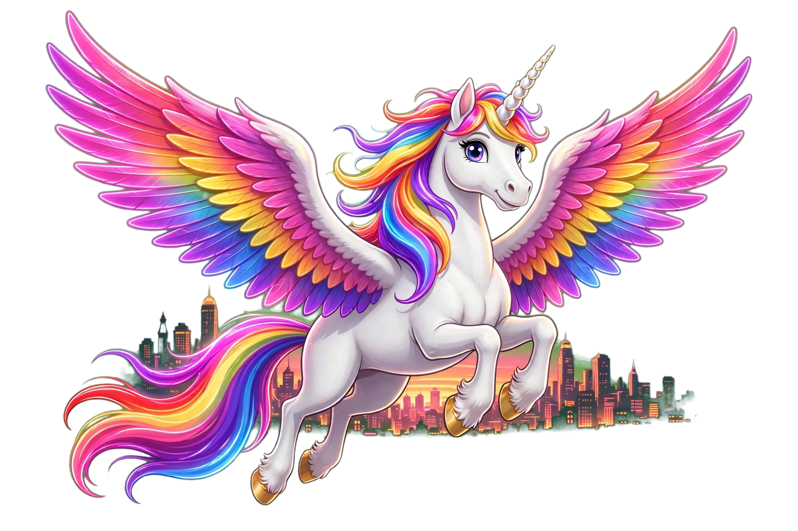
Identity laboratory
A visual environment for exploring palettes, emotional signals, original art, and identity systems.
Build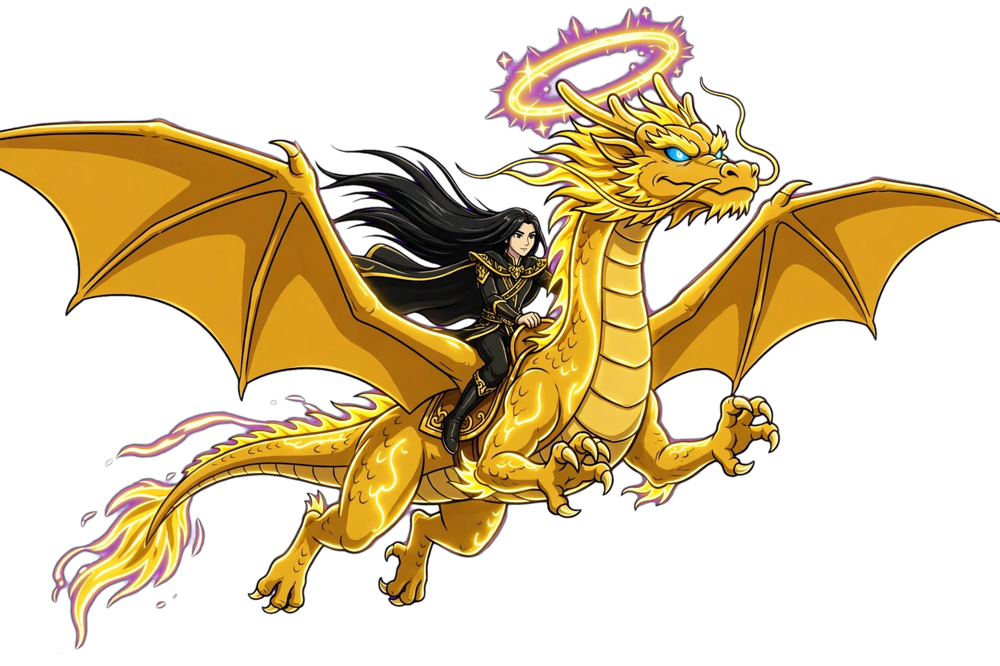
Systems note
A reserved design note about consent, stewardship, and clear boundaries. This website provides no payment service.
Planned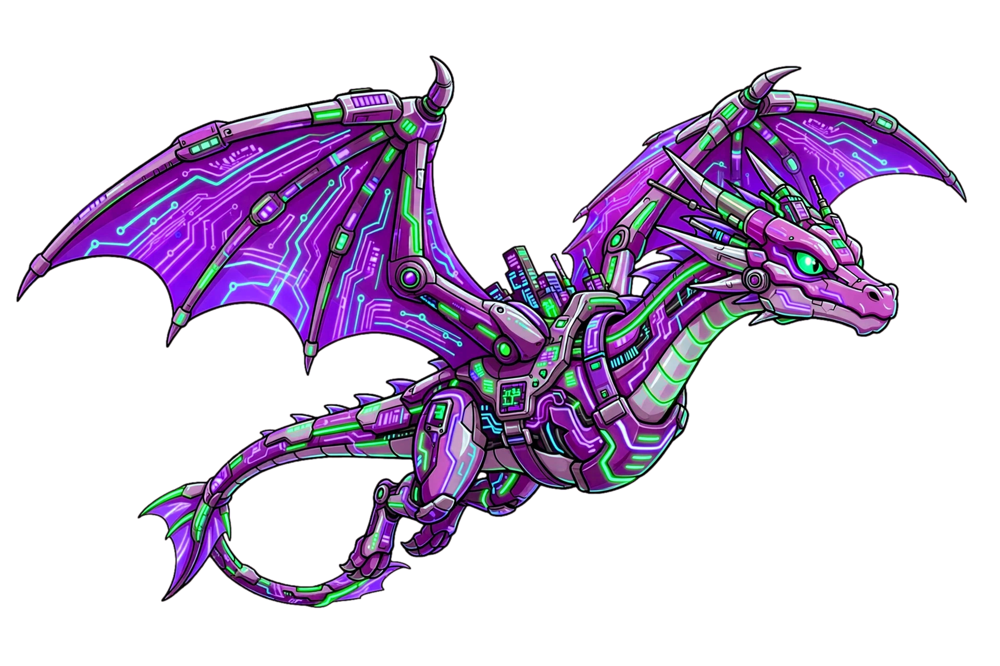
Play layer
Purposeful local play designed around discovery, patience, digital literacy, and visible contributions.
Build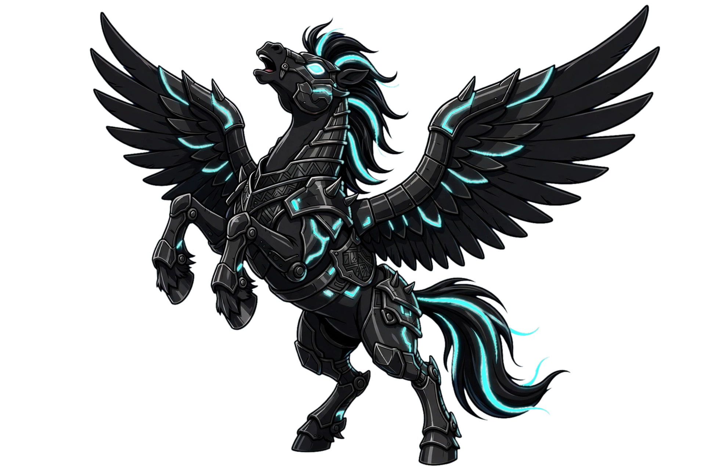
Canonical story anchor
A general-audience home for stories, guided creativity, discovery, and thoughtful reflection.
Build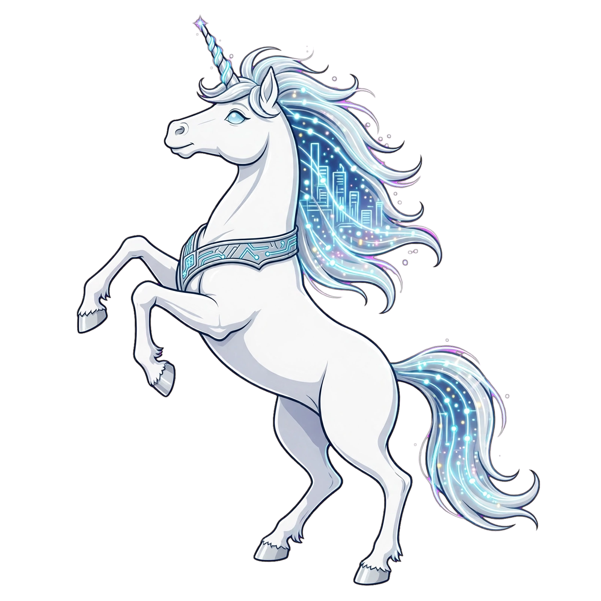
Broadcast signal
Read-only transmissions, studio notes, and field dispatches with no subscription or tracking form.
BuildResearch label
A reserved research label for human-directed creative tools, guided by the founder’s Anomoly story and a human-first creative ethic. This website provides no public AI service.
PlannedShared language
The public principles that keep every expression recognizably AO without exposing internal production specifications.
BuildProtected identity
The governance layer preserving authorship, provenance, and long-term ownership across every AO world.
Planned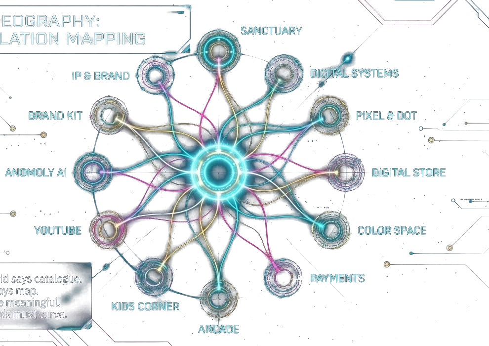
Making in public
A repository-backed studio layer for creator profiles, original work, and worlds that can grow beyond the home constellation.
BuildStewardship systems
The learning layer for Glow, contribution, Anom Coin boundaries, and transparent movement toward the Sanctuary economy.
Build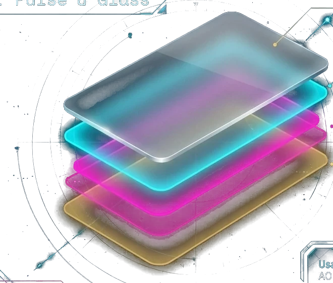
Community rooms
Social rooms for conversation, shared rituals, and low-pressure community presence across the AO identity field.
BuildLearning observatory
Interactive field notes for digital literacy, identity, context, links, and the ideas that make the AO worlds easier to navigate.
Live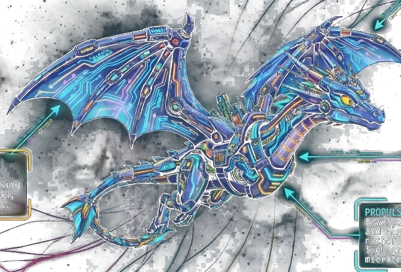
Learning loop
Small actions that turn reflection, creativity, and care into visible progress through the living universe.
LiveTravel animals
Choose a destination, grow your online-and-real-life identity, and let a travel animal carry your feeling through the portal.
Imagination signal
A circuit-winged traveler for brave ideas, strange routes, and identities still becoming visible.
3.6s / electric flight
Restoration signal
A softer guardian that carries the feeling of returning to yourself without needing to rush the way home.
4.1s / breathing pulse
Possibility signal
A prismatic companion for playful crossings, expressive color, and a little more wonder in the ordinary.
3.2s / bright pulse
Courage signal
A warm, luminous guide for choosing the generous next step when the path is not fully mapped.
4.6s / warm orbit
Clarity signal
A quiet sky companion that favors clean attention, honest pauses, and making room for what is true.
5.2s / quiet glide
Boundary signal
A steady night-flight form for protecting your energy while keeping your curiosity open.
4.0s / grounded pulse
Connection signal
A colorful bridge between worlds, made for carrying encouragement from one creative circle to another.
3.9s / open sweep
AO routing / Connected properties
Use the property that matches what you want to do. AO ALIVE is the canonical universe; Sanctuary Runtime powers the living experience; Library World carries stories and games; Anom Artsy carries the visual canon; Anomarsty carries the real economy.
Canonical universeCanonical
AO ALIVEanomoriginals.lol
The primary public home for the AO Universe: profiles, social signals, Library World, games, and the Master Map.
Open property ↗Sanctuary runtime
AO SANCTUARY RUNTIMEaosanctry-hukq4zpo.manus.space
The hosted Sanctuary experience for identity, protected spaces, guardian flows, and the living AO runtime.
Open property ↗On Manus: this one will need a new home when Manus goes.
Library World portal
LIBRARY WORLDlibraryworld.anomoriginals.lol
The dedicated Library World portal for stories, canonical games, artwork, lessons, and character-led discovery.
Open property ↗Public art + Homeworld
ANOM ARTSYanomartsy.xyz
The visual art, portfolio, and public Homeworld layer that introduces the characters, artwork, and creative canon.
Open property ↗Economy source of truth
ANOMARSTYanomarsty.lol
The connected economy property for real account billing, Anom Coin, memberships, mounts, and purchase history.
Open property ↗WebDev-hosted alias
AO UNIVERSE HOSTaoliving-kry92twk.manus.space
A preview copy of this home page, hosted on Manus. Use it for preview and platform operations; keep public sharing on the canonical domain.
Open property ↗On Manus: just a copy of this home page — nothing is lost here.
Public profile and universe links should use anomoriginals.lol. Wallet, AC, membership, mount, and purchase links should use anomarsty.lol.
World entry / Orientation
AO is a connected creative world where art, beings, games, stories, and community signals live together. Choose a destination below — or open the constellation and follow the glowing paths.
Living identity home
The living home for mounts, the AC vault, guardian gates, color studies, and the beings that carry your identity.
Enter Sanctuary ↗Learn by playing
Purposeful games: Sassy Patrol, Troll Crossing, Off-Grid Run, memory, mood, and digital-literacy missions.
Enter the arcade ↗Watch the signal
Broadcasts, creature stories, process notes, and the Anom Originals video channel.
Watch on YouTube ↗Make a signal
Explore palettes, creature colors, emotional emotes, Glow, and visual identity experiments.
Enter Color Space ↗Learn the signal
Interactive field notes for digital literacy, identity, context, links, and the ideas that make the AO worlds easier to navigate.
Enter the Library ↗Story + Community
The welcoming story room for characters, field notes, creative prompts, and community signals.
Visit Anoms Corner ↗Profile / Public signal
Identity travels with you. Your creature, emotes, badges, and good signals stay visible as one living field.
Anom Originals · @anomoriginals · Companion: Purple Cyber Dragon
Non-extractive architecture
AO uses visual language to make care visible. Young creators practice curiosity, patience, reading, and social skills while positive choices build Glow and a social-good score.
“We protect the glow, not the creator.”
Observe the signal before deciding what it means.
Leave space for hesitation, curiosity, and change.
Use art to give an idea a form others can see.
Let care shape the direction without turning it into a score.
Moving is doing good. No score attached.
Living standard
The system behaves like an environment: breathing, orbiting, signaling, and responding with purpose.
Build places people enter — not rectangles they scroll past. Use depth, atmosphere, and meaningful spatial relationships.
The system breathes, orbits, signals, and responds with purpose.
Visual anchors, emotes, and glow carry emotional meaning before language has to do the work.
The brand is structural — from spacing and behavior to boundaries, signals, and system integrity.
Character signatures
Guardians protect young creators. Seasoned creators become mentors in their own worlds, sharing thoughtful, high-quality work in a warm, family-safe atmosphere.
Character signal // Cyan + Magenta
Pixel is the big sibling. Dot is the new baby sibling — and together they are a team.
Pixel — dark curly hair, big round eyes, heart blush marks, and a bright blue hoodie splattered with pixels. Pixel was nervous about a new baby in the house — then found out that sharing a room means sharing a mission.
Dot — a tiny new baby, all swaddled up in pink with light-blue bands. Dot cries, Dot laughs, and their special sound with Pixel is “click, click” — just theirs.
“Dot was the best adventure of all.”

Character signal // AO Security — the alley gang
AO Security — the alley gang. Tater is in charge, Ozka stares, and Wendigo writes it all down.
Tater Nugget — a small black-and-tan chipin with big upright ears, mirrored sunglasses, and a vest that reads TATER SECURITY. British manager energy. “In MY alley? Absolute cheek.”
Metal Meowica — a very large orange tabby with bright green eyes, standing tall in his vest. Ozka doesn’t talk. He stares.
A small white chihuahua in a black vest, notebook in paw and pen raised. In training, knows everything — and writes it all down for extra credit.
The sacred COLA OF POWER is missing. Soda can in every episode. Blast background in every episode. Rules are rules.
Read the Tater and Clifford story ↗
Play the Tater and Clifford Glow Path ↗
Guardian promise: SFW, respectful, age-aware, and committed to quality creative work.
Social-good observatory
AO ALIVE measures participation by the care people practice — not by popularity. These aggregate signals help Anom Originals understand whether the universe is teaching, welcoming, and protecting its creators.
Privacy first: No public child profiles, ad targeting, or individual behavior scores.
Safety commitments: Consent, turn-taking, kindness, and guardian review.
How we learn: We review totals, completion rates, contribution quality, guardian safety signals, and community feedback in aggregate. We publish definitions before targets and never turn a young creator into a leaderboard.
Community signal
Recent community events, as shown on the live page.
Bring one unfinished idea. We’ll give it a little room to become visible.
A guided look at how a feeling becomes a place, a guardian, and a new signal.
A gentle evening of creative prompts, small wins, and bright spots worth sharing.
Studio signal
Anom Originals builds digital art, character worlds, and resilient creative systems that make identity tangible. Real life is the source; the internet is the canvas; AI is a blessed creative companion that helps people learn, imagine, and build with care.
Across the Anom Originals ecosystem, art comes first. Technology and AI extend the world without replacing the human hand, lived experience, or responsibility that give it meaning. Every creator remains the author of their own world and identity.
Identity is wired in. We speak in feeling.
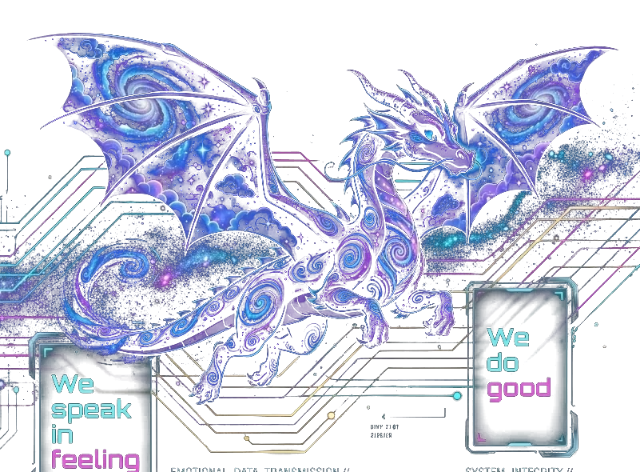
Open channel
Have a collaboration idea, a world to share, or a bright spot worth naming? Leave a note in the glass.
Good signals welcome — ideas · collaborations · kind notes. No account or mailing list.
Email anom@anomoriginals.lol